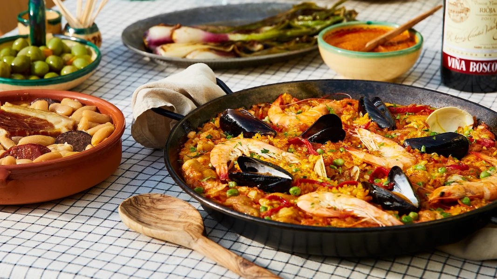

There are many, many paella recipes. Originally paella was a dish made in Valencia using chicken, rabbit, snails and three kinds of fresh beans. Now, paella is almost always associated with seafood, chicken and vegetables. There is no right or wrong recipe, only the recipe that pleases you. Paella ingredients vary from place to place, and time to time, depending on local traditions and the ingredients available. Anything from fresh garden produce to holiday left-overs can inspire a cook to create an original version of this one-dish feast! The dish was named after the pan it is cooked in, a Paellera, which is also used for a variety of rice dishes, such as arroz negro, as well as the Spanish pasta dish: fideua.
This is only one recipe, use your imagination and the ingredients at hand, varying the ingredients can make Paella an everyday dish.
